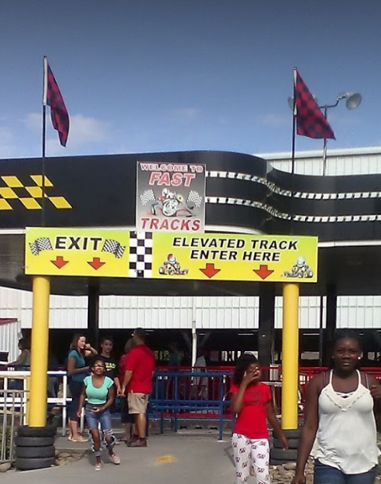

This is the place to be if you are looking to drive go-karts or bumper cars.
The activites available here are ones that we all did as a kid.
In addition to driving, one can go on rides and eat food you would find at local fairs. This is a great opportunity to affordably experience childhood all over again.

Everything that can be found here is obviously not unique. There are race tracks and bumper cars all over America.
However, the conglomeration of it all is still a fascinating sight to see.

Race track, flags, carousel, rides...
Cars parked out in the front...
The summer heat...
One of the most outstanding aspects of Blake Jones Racing Center is the oversaturation of colors.


Whoever designed this place does not have "minimalism" in their vocabulary.
Blake Jones Racing Center may not be for everyone. It is not sophisticated nor particularly special. But if you just want a simple, fun time, this is the perfect place.